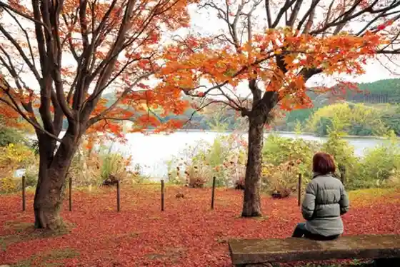
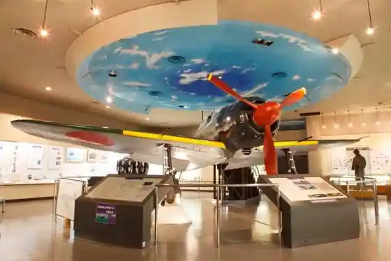
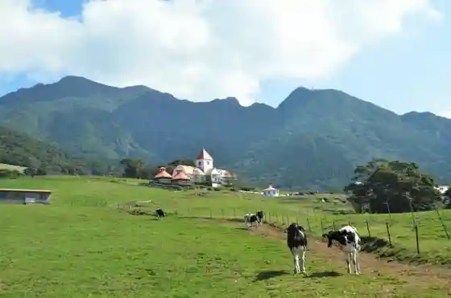

Kiri Shimagaoka Park
Kanoya, Kagoshima · 0994-40-2170 · Official / source link
Osumi Mizumi
Kanoya, Kagoshima · 0994-31-1121 · Official / source link

Kanoya Koku Kichi Shiryo Kan
Kanoya, Kagoshima · 0994-42-0233 · Official / source link

Kanoya Minzoku Kan (Ajia Taiheiyo no Village Kenshu Village Minzoku Kan)
Kanoya, Kagoshima · 0994-45-2872 · Official / source link
Kanoya Mei Yuki O Ranch
Kanoya, Kagoshima · 0994-46-3247 · Official / source link

Takasu Beach
Kanoya, Kagoshima · 0994-47-2500 · Official / source link
Hamada Beach
Kanoya, Kagoshima · 0994-47-2200 · Official / source link
Kihoku Uwaba Park Kihoku Tenkyu Kan
Kanoya, Kagoshima · 099-485-1900 · Official / source link
Shita Kohara Ike Koen Roguhausu
Kanoya, Kagoshima · 0994-63-8198 · Official / source link
Otsuka Yama Park
Kanoya, Kagoshima · 0994-31-1148 · Official / source link
Akuazon Kushira (Heiwakoen Rejapuru)
Kanoya, Kagoshima · 0994-62-4152 · Official / source link
Aira Yamagami Ryo (Airasanryo)
Kanoya, Kagoshima · 0994-58-7257 · Official / source link
Kako Shima Prefectural Osumi Koiki Park Campground
Kanoya, Kagoshima · 0994-58-5197 · Official / source link
Kuroba Ko Tourist Farm
Kanoya, Kagoshima · 0994-58-7257 · Official / source link
Kako Shima Ken Ajia Taiheiyo no Village Kenshu Center (Kapikku Center)
Kanoya, Kagoshima · 0994-45-3288 · Official / source link
Sugawara Shrine (Ko Hiraten Kami)
Kanoya, Kagoshima · 0994-31-1121 · Official / source link
Kojika Shuzo (Kabu)
Kanoya, Kagoshima · 0994-58-7171 · Official / source link
Ka no Yabara Sono
Kanoya, Kagoshima · 0994-40-2170 · Official / source link
Kanoya Koryu Center Yu Yu Land Aira
Kanoya, Kagoshima · 0994-34-4500 · Official / source link
Tonkatsu Chikutei Kanoya Main Shop
Kanoya, Kagoshima · 0994-43-3383 · Official / source link
Kushira Heiwa Park
Kanoya, Kagoshima · 0994-31-1148 · Official / source link
Guriinkantorii Taka Kuma
Kanoya, Kagoshima · 0994-45-2891 · Official / source link
NPO Hojin Rozuringu Ka no Ya
Kanoya, Kagoshima · 0994-41-8718 · Official / source link
Kanoya Tetsudo Memorial Museum
Kanoya, Kagoshima · 0994-40-0078 · Official / source link
Oka no Hi Nozato Kokumin Gakko Ato
Kanoya, Kagoshima · 0994-31-1121 · Official / source link
Kozuka Park (Kyu Kanoya Koku Kichi Tokubetsu Kogekitai Sembotsu Mono Irei to)
Kanoya, Kagoshima · 0994-31-1148 · Official / source link
Kanoya Gyokyo Minato Shokudo
Kanoya, Kagoshima · 0994-46-3020 · Official / source link
Ea Memorial in Ka no Ya 2026
Kanoya, Kagoshima · 0994-42-6690 · Official / source link
Hirabohotaru Village
Kanoya, Kagoshima · 099-486-1111 · Official / source link
Hotaru Kansho Supotto [ Kanoya Aira Town ]
Kanoya, Kagoshima · 0994-58-6036 · Official / source link
Kotoku Inari Shrine
Kanoya, Kagoshima · 0994-36-0303 · Official / source link
Damasuku no Kaze
Kanoya, Kagoshima · 0994-46-5627 · Official / source link
Yukusa Osumi Umi no Gakko
Kanoya, Kagoshima · 0994-31-8193 · Official / source link
Fukudome Sho Ranch
Kanoya, Kagoshima · 0994-48-2324 · Official / source link
Kushira Sakura Onsen
Kanoya, Kagoshima · 0994-31-4426 · Official / source link
Komatsu Shokudo
Kanoya, Kagoshima · 0994-42-2075 · Official / source link
Rion Diner
Kanoya, Kagoshima · 080-9063-4495 · Official / source link
Shussui Ta Sengyo
Kanoya, Kagoshima · 0994-42-3510 · Official / source link
Ikoi no Sato Sono (Ajisai Sono)
Kanoya, Kagoshima · Official / source link
Kanoya Kanko Bussan Sogo Center
Kanoya, Kagoshima · 0994-41-7010 · Official / source link
Kannon Fuchi Chusei Kuyo to Gun
Kanoya, Kagoshima · 0994-31-1121 · Official / source link
Nanshin Mizukawa Suiri Kumiai Kosumosu Sono
Kanoya, Kagoshima · 0994-49-3098 · Official / source link
Mori Shokyu Campground
Kanoya, Kagoshima · 090-5922-5844 · Official / source link
Kushira Kichiato no Chika Hori Daiichi Denshin Shitsu
Kanoya, Kagoshima · 0994-31-1121 · Official / source link
Kasano Genki Chi Ato no Kawato Entai Hori
Kanoya, Kagoshima · 0994-31-1121 · Official / source link
Kanno Yama no Gakko Campground
Kanoya, Kagoshima · 0994-58-6566 · Official / source link
Hareruya Ranch
Kanoya, Kagoshima · 090-8956-6283 · Official / source link